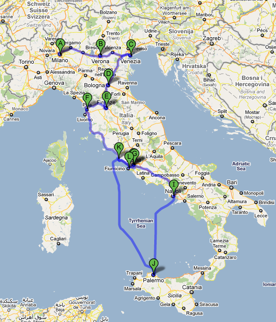
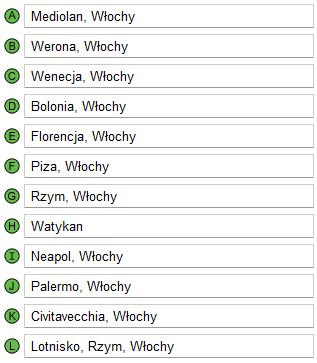

Wycieczka
Trasa
 Mediolan
Werona
Wenecja
Bolonia
Florencja
Piza
Rzym
Watykan
Neapol
Palermo
Szczegółowy plan
Dzień 1
Wylot z wrocławskiego lotniska im. Mikołaja Kopernika odbywa się o godzinie dziesiątej. Lądując w Mediolanie, wynajmujmy kemping i jedziemy do kościoła Santa Maria, gdzie możemy spędzić czas nad freskami autorstwa Leonarda da Vinci. Po dokładnym przeanalizowaniu jednego z wybitnych dzieł malarza "Ostatnia wieczerza" udajemy się do największej katedry w Mediolanie. Niedaleko jest galeria Wiktora Emanuela, której zwiedzanie zajmie Nam około 1,5 h. Na noc możemy się zatrzymać w kempingu Villaggio Italgest. Wieczorkiem proponujemy udanie się na spacer po deptaku Via Dante.
Dzień 2
Rano opuszczamy kemping i jedziemy do miasta "Romea i Julii". Najsłynniejsze i najbardziej warte zobaczenia zabytki to Pałac Governo oraz oddalony od niego o kilka kilometrów Dom Julii ze znanym z tragedii Shakespeara tarasem i słynnym posągiem. W Weronie proponujemy udać się na obiad do pizzerii w rynku przechodząc przez most Ponte Pietra. Taki posiłek spodoba się z pewnością każdemu. Łuk Areny jest kolejny na naszej liście antyków. Jest to jeden z najstarszych i największych teatrów na świecie. Będąc w Szekspirowskim mieście nie można ominąć przepięknej Bazyliki świętego Zenona. Tuż po godzinie 17:00 wyjeżdżamy do Wenecji, w której musimy zostawić nasz środek transportu i wynająć na jedną noc hotel.
Dzień 3
Po śniadaniu w jednej z knajpek udajemy się na półgodzinny rejs gondolą do serca Wenecji - Placu św. Piotra. Znajduje się tutaj okazała Bazylika św. Piotra z dzwonnicą z 1514 roku. Te tysiące wysepek są jednak drogim miastem więc szybko wracamy do naszego samochodu i jedziemy do Bolonii. Przejazd zajmie nam około 2 godzin, więc zdążymy zobaczyć jeszcze po obiedzie Bazylikę San Petronio i Muzeum Archeologiczne. Gdy zacznie zapadać zmrok udamy się do kempingu Ancora.
Dzień 4
Z rana jedziemy zwiedzić Kościół św. Franciszka, na czym zakończymy wycieczkę po Bolonii i wyjeżdżamy do Florencji. Wjeżdżając warto zajechać do katedry Sanata Maria del Fiore, kolejno zjeść obiad, a następnie pójść do Muzeum dell'Opera del Duomo, gdzie możemy zobaczyć między innymi Pietę Michała Anioła. Następnie, wieczorem, po znalezieniu np. Camping Village Le Pianacce udajemy się na przechadzkę po Ponte Vecchio i Pizza della Signoria.
Dzień 5
Wypoczęci i pełni sił udajemy się do popularnej Pizy. Docierając do niej po około 1 h proponujemy wycieczkę do Piazza dei Cavallieri i słynnej na całym świecie Krzywej Wieży. W Pizie nie ma co się zatrzymywać dla tego szybko jemy w przydrożnej restauracji obiad i jedziemy do Rzymu. Na miejscu zaczynamy zwiedzanie od Koloseum a następnie panteonu. Aby zakończyć dzień „na zielono” jedziemy do Parku Villa Borghese. W Rzymie zatrzymamy się jeszcze 2 dni, a przenocujemy w kempingu Seven Hills Village.
Dzień 6
Dzień VI zaczynamy od zwiedzenia Forum Romanum, a następnie Łuku Konstantyna. Po spędzeniu czasu na obejrzeniu niesamowitego zabytku, udajemy się do restauracji na obiad. Koło godziny 17:00 wybieramy się na plac Piazza di Spagna oraz podziwiamy najsłynniejszy element tego obiektu, który stanowią Schody Hiszpańskie.
Dzień 7
Ostatni dzień w Rzymie rozpoczynamy od zwiedzenia bazyliki św. Pawła za Murami i Bazyliki Santa Croce in Gerusalemme. Po katedrach udajemy się do Muzeum Dusz Czyśćcowych. W między czasie możemy pójść na obiad. Dzień kończymy romantycznie przechodząc rzez Most Miłości nazywany we Włoszech Ponte Milvio. Dziś spędzamy ostatnią noc w kempingu Seven Hills Village.
Dzień 8
Rano opuszczamy kemping i jedziemy do Watykanu oddalonego od Rzymu o niecałe 4 kilometry. Na miejscu w ciągu jednego dnia zwiedzamy: Plac św. Piotra wraz z Bazyliką św. Piotra, a na koniec możemy podejść spacerkiem do Muzeum Watykańskiego. Po obiedzie szybko wyjeżdżamy do Neapolu.
Dzień 9
W Neapolu wypada zobaczyć Pałac Królewski i Galerię Umberta I. Podjeżdżamy do portu, gdzie rozstajemy się z samochodem i spędzamy dzień na plaży, jedząc na obiad włoskie owoce morza. Wieczorem kupujemy rejs statkiem do Palermo. Na miejsce docieramy po około 2 h. Wynajmujemy hotel na dwie noce.
Dzień 10
Palermo zwiedzamy na nogach, ponieważ zabytki nie są od siebie oddalone w dużych odległościach. My zwiedzimy tu: Kościół San Domenico, I Qu attro Canti, Kościół S. Giuseppe, a na koniec Piazza Pretoria. Na Sycylii warto spróbować świeżych owoców morza, takich jak np. krewetki i ośmiornice. Na noc wracamy do hotelu.
Dzień 11
Rano idziemy na port i wracamy promem. Nasz rejs kończymy w miejscowości położone niedaleko Rzymu - zwanej Civitavecchia. Tu wynajmujemy domek na plaży. Kolejne dni spędzamy odpoczywając na plaży.
Dzień 12
Cały dzień spędzamy na plaży, uprawiając przeróżne sporty wodne i opalając się.
Dzień 13
Tego dnia jedziemy na lotnisko w Rzymie. Rzucamy ostatnie, tęskne spojrzenie na otoczenie i wylatujemy do Wrocławia samolotem o godzinie 14:25. Po tak aktywnych wakacjach przyda nam się chwila relaksu...
Dane liczbowe
Czas przelotu samolotem na trasie: Wrocław - Mediolan
2 godziny
Czas przelotu samolotem na trasie: Rzym - Wrocław
2 godziny 15 minut
Czas przepływu statkiem
około 132 min = 2 godziny 12 minut
Długość przepływu statkiem
811 km
Czas przejazdu środkami transportu, podczas całej wycieczki
1234 minut = 20 godzin 34 minut
Długość przejazdu wynajętym środkiem transportu podczas trasy we Włoszech
1841,7 km


{kind=link}